הצגה ללקוח
לא מוכרים לוגו, מוכרים ביטחון. המדריך המלא למעצבים צעירים: איך להציג פתרון מיתוגי שמנצח, שקופית אחרי שקופית, מההקשר ועד ה„כן”.
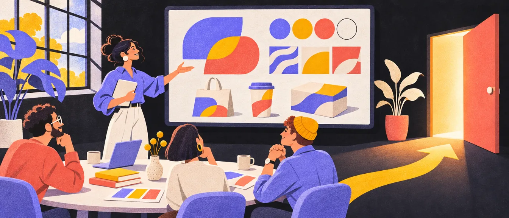
המטרה: להוביל להחלטה, לא לבקש דעה
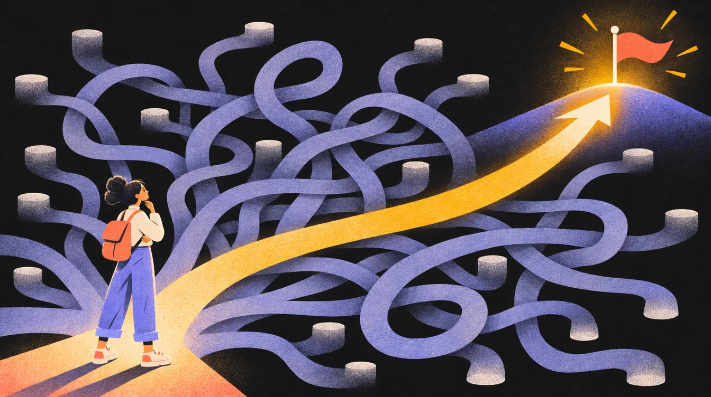
המצגת אינה תחרות יופי. המטרה שלה היא להוביל את הלקוח להבנה שהפתרון שאתם מציגים הוא הנכון וההגיוני ביותר עבור המותג שלו.
אנחנו לא מציגים אופציות, אנחנו מסבירים החלטות. הלוגו הוא רק נקודת הכניסה. הערך האמיתי נוצר מהאופן שבו הוא חי ומתפקד בעולם האמיתי, כחלק ממערכת זהות שלמה.
לא אופציות: פתרונות
עוברים מהצגת „אופציות” להצגת „פתרונות”:
הדרך החובבנית
לשלוח 20 אופציות אקראיות ולשאול: „איזה צבע אתה הכי אוהב?”
הדרך המקצועית
להציג לכל היותר שלושה פתרונות חזקים (מערכות), כל אחד מנומק ומחובר לבריף ולקהל.
איך מציגים נכון
- הראו איך כל מערכת עובדת בעולם האמיתי: מסכים, דפוס, תנועה.
- הסבירו למה הצורות, הצבעים והטיפוגרפיה מתאימים לקהל ולמטרות העסקיות.
- המטרה שלכם: להפוך את ה„כן” של הלקוח להחלטה הקלה וההגיונית ביותר.

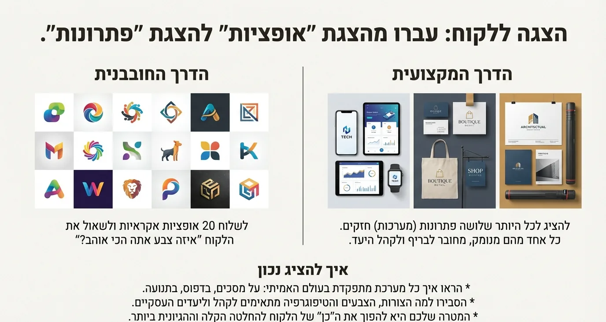
אז כמה פתרונות להציג?
„לכל היותר שלושה” הוא התקרה. הרבה סטודיואים הולכים רחוק יותר ומציגים קונספט אחד בלבד, כי ברגע שיש חמישה כיוונים על השולחן, הלקוח מתחיל לבקש „את הצבע מזה, את הצורה מההוא ואת הפונט מהשלישי”, ויוצא פרנקנשטיין בלי חוט שדרה. שתי הגישות מסכימות על העיקר, אז ככה עובדים:
המצגת, שקופית אחר שקופית
זה הסדר שאני ממליץ עליו: 18 שקופיות. כל שלב בונה את הקרקע לשלב הבא, כך שכשהלוגו סוף סוף מופיע, הלקוח כבר מבין למה הוא נראה כמו שהוא נראה. לחיצה על שקופית קופצת להסבר שלה, ומשם להרחבה בהמשך הפרק.
עיקרון־על: לוגו הוא נקודת כניסה. הוא לא מספיק. הערך האמיתי נוצר מהאופן שבו הלוגו חי, זז ומתפקד בעולם האמיתי, כחלק ממערכת זהות שלמה.
הקשר: חמש שקופיות לפני שרואים עיצוב אחד. האתגר, המותג, הקהל, הכיוון והרעיון, כך שהלוגו מגיע כתשובה.הלוגו: רק עכשיו החשיפה. הלוגו לבד, ומיד אחריו למה הצורה והצבע נראים כך.המערכת: מוכיחים שהוא עובד בכל גודל, ושיש סביבו מערכת שלמה ולא אוסף החלטות.בעולם: שבע שקופיות. שש של המותג בחיים עצמם: מוקאפים, מסך, דפוס, שילוט, הלבשה ואריזה, ועוד אחת על AI בתהליך.ההחלטה: שקופית אחת שסוגרת. לא הצגנו לוגו, הצגנו מערכת שעובדת.
1. פתיחה והקשר
השקף הראשון מיישר קו: מה האתגר, מה מטרת המיתוג, איזו בעיה הלוגו נועד לפתור. מיישרים קו על האתגר
2. הבנת המותג
שקף שמוכיח שהקשבתם: מי המותג, מה הוא רוצה לשדר, מה הערכים המרכזיים שלו, ואיפה הוא רוצה להיות ממוקם מול המתחרים. זה מייצר אמון עוד לפני שרואים עיצוב. תמצית האסטרטגיה
3. קהל היעד
הצגה ברורה של מי אמור להזדהות עם המותג: איך הקהל נראה, מה הוא צורך ויזואלית, באילו סביבות הוא פוגש את המותג, ואילו תחושות אמורות להיווצר אצלו. הלוגו לא נמדד לפי טעם אישי. הוא מיועד להם. מי השבט למי המותג פונה
4. כיוון אסטרטגי
שקף שמגדיר החלטות: מה בחרתם להיות, ומה במכוון לא. לדוגמה: מאופק ולא צעיר מדי, בטוח ולא אגרסיבי, מודרני אבל לא טרנדי. זה סוגר ויכוחים מראש. אנחנו כן / אנחנו לא
5. קונספט עיצובי
כאן מתחיל החיבור לעיצוב, דרך רעיון: מה הסיפור שמאחורי הלוגו, מה העיקרון המוביל, איזה מסר הוא אמור לשדר עוד לפני שקוראים אותו. בלי פרטים טכניים. הקונספט העיצובי
6. הלוגו הראשי
הצגה נקייה וברורה של הלוגו: רקע שקט, מרווח נשימה, בלי הסחות דעת. זה הרגע שבו הלקוח צריך להרגיש שזה נכון. החשיפה
7. משמעות הצורה
הסבר קצר על המבנה והצורה: איך הצורה משרתת את ערכי המותג ואת קהל היעד. לא הרצאה תיאורטית, אלא חיבור בין החלטה למשמעות. משמעות לכל החלטה פסיכולוגיה של צורות
8. צבע וגימור
הסבר על אופי הצבעים והגימור: איזו תחושה הם מייצרים, ואיך זה מתאים לסביבה שבה המותג חי. המסר: זו בחירה אסטרטגית, לא טעם אישי. משמעות לכל החלטה פסיכולוגיה של צבעים
9. ורסטיליות ושימושים
הוכחה שהלוגו עובד בעולם האמיתי: גדלים שונים, רקעים שונים, דיגיטל, פרינט, אייקון, אווטאר (תמונת פרופיל לרשתות החברתיות). זה השלב שמרגיע חששות. עובד בכל מצב
10. שפה עיצובית ומערכת זהות
להבהיר שלוגו לבד זה לא מותג, ואיך הלוגו מתפקד כחלק ממערכת רחבה יותר:
- טיפוגרפיה: פונטים ראשיים ומשניים.
- צבעים: פלטה, היררכיה, שימוש נכון.
- פאטרנים: נגזרות מהלוגו או מהצורה המרכזית.
- גרידים: סדר, עקביות וחוקיות.
המסר: יש מערכת, לא אוסף החלטות אקראי. מערכת זהות שלמה
11. שימושים פרקטיים ומוקאפים
שקף שמוכיח שימושיות, לא יופי: מוקאפים ריאליסטיים שמראים את המותג בהקשרים אמיתיים, לא וריאציות צבע. מוקאפים
12. שימושים דיגיטליים
איך הלוגו והשפה עובדים על מסך:
- אתר ואפליקציה: מסך פתיחה, פייביקון, אזור כותרת, תפריטים.
- רשתות חברתיות: פוסטים, סטוריז, קאברים, תמונת פרופיל.
- פרסום דיגיטלי: באנרים, מודעות, קריאייטיבים לפיד.
- אם יש תנועה: הנפשות לוגו עדינות, אינטרואים קצרים, מיקרו־אינטראקציות. After Effects כסטנדרט, לא כבונוס.
בעולם הדיגיטלי כל המידות לרשתות ולבאנרים
13. שימוש ב־AI בתהליך
להבהיר שזה כלי עבודה לגיטימי. AI משמש לקיצור תהליכים, ליצירת וריאציות, לבניית מוקאפים, להדמיות ולסרטונים. אין בעיה להשתמש בו גם להנפשות, לווידאו ולהרחבת דוגמאות. החשיבה וההחלטות אנושיות, הכלי רק מאיץ. זה משדר יעילות, לא חוסר מקצועיות. ומה אומרים על זה ללקוח
14. דוגמאות דפוס
להראות שהמותג עובד גם בלי מסך: דיוק, קריאות וחומריות. זו הזדמנות לחשוב על סוג הנייר ועל גימורים, כמו שכבות דפוס שונות: פויל, הטבעה וכו’.
- פוסטרים
- פליירים
- כרטיסי ביקור
- גלויות
- תפריט מסעדה, אם רלוונטי
15. שילוט ומרחב
איך המותג מתנהג בסקייל גדול. הוכחה לסקיילביליות אמיתית.
- שילוט חוץ
- שילוט פנים
- ויטרינות
- קירות
16. מוצרים והלבשה
איפה שהמותג פוגש אנשים פיזית. רק מה שרלוונטי לאופי המותג.
- חולצות
- כובעים
- תיקי גב
- סינרים
- מדבקות
17. אריזות ושקיות
אם יש מוצר, זה חלק מהזהות. המטרה היא נוכחות, לא קישוט.
- שקיות נייר
- שקיות בד
- שקיות משלוחים ממותגות
- קופסאות
18. סיכום והחלטה
לא הצגנו לוגו. הצגנו מערכת שעובדת בדיגיטל, בדפוס, בתנועה ובמציאות. כך נראה מותג שמוכן לצאת לעולם. הצגנו מערכת שעובדת עיקרון הזהב
- בחשיפת הלוגו הראו אותו קודם בשחור־לבן, כדי להוכיח שהצורה עובדת בלי צבע, ורק אחר כך בצבע.
- תכננו 4–8 שקפים של הדמיות בעולם האמיתי. פחות מזה לא משכנע, יותר מזה מעייף.
- תמיד מציגים בשיחה, פנים מול פנים או בווידאו. לא שולחים לוגו בדוא"ל בלי להסביר אותו.
- שולטים בקצב: חושפים שלב אחרי שלב, ולא שולחים את הקובץ לפני הפגישה.
השלב הראשון: מיישרים קו על האתגר
כל מצגת מנצחת מתחילה בהקשר. לפני שרואים עיצוב אחד, חוזרים על הבסיס המשותף:
- האתגר המרכזי: מהי הבעיה העסקית שאנחנו פותרים?
- מטרת המיתוג: מה אנחנו רוצים להשיג? (למשל: לבדל, לרענן, לפנות לקהל חדש)
- תפקיד הלוגו: איזה מסר ספציפי הלוגו צריך להעביר כדי לפתור את האתגר?

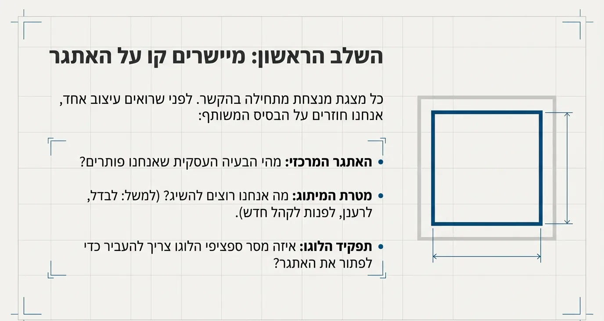
הוכחה שהקשבנו: תמצית אסטרטגיית המותג
„סיכמנו את ה־DNA של המותג שלכם. זו האמת שעליה יתבסס כל העיצוב.” ארבעה דברים, משפט אחד לכל אחד:

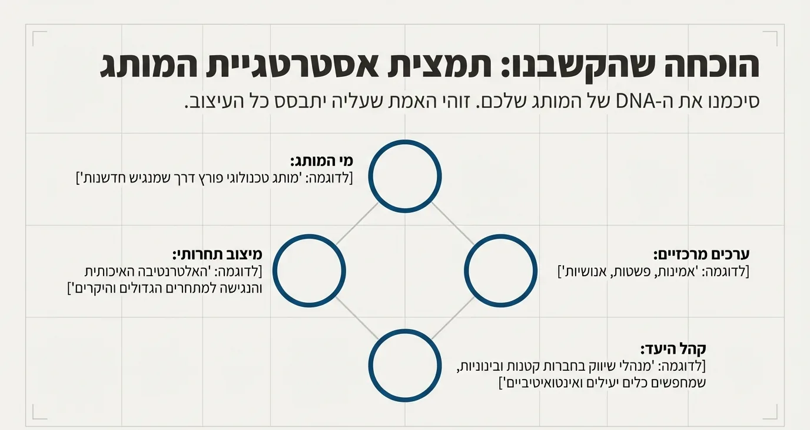
איך מגיעים לארבעת המשפטים האלה, זה כבר פרק האסטרטגיה. כאן רק מראים ללקוח שהקשבתם. סיפור, קהל ומיצוב תבנית בריף
ההסכם שלנו: מה בחרנו להיות (ומה במכוון לא)
על בסיס האסטרטגיה, הגדרנו יחד את הגבולות היצירתיים. ההחלטות האלה ינחו את כל הבחירות העיצוביות.
אנחנו כן
- בטוחים
- מאופקים
- מודרניים
- נגישים
אנחנו לא
- אגרסיביים
- צעירים מדי
- טרנדיים
- מסורתיים

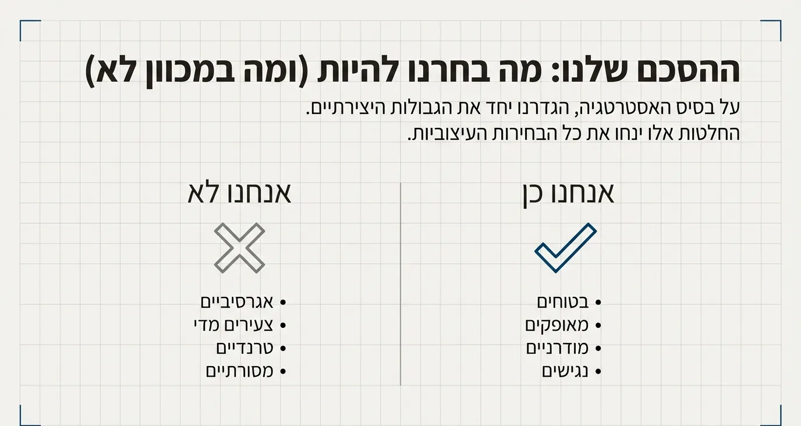
זה אותו שריר כמו רשימות ה„כל הזמן” וה„לעולם לא” של השפה התקשורתית, בגרסת מצגת: ארבע מילים בכל צד, וההסכמה של הלקוח עליהן. מהרגע הזה, כל ויכוח על טעם חוזר לעמוד הזה. שפה תקשורתית
מהסיפור אל הצורה: הקונספט העיצובי
לכל לוגו חזק יש רעיון מרכזי אחד. בשקף הזה משלימים שלושה משפטים:
העיקרון המוביל הוא זרימה ופשטות.
המסר שהלוגו ישדר, עוד לפני שקוראים את שם המותג, הוא קלות שימוש ושותפות.

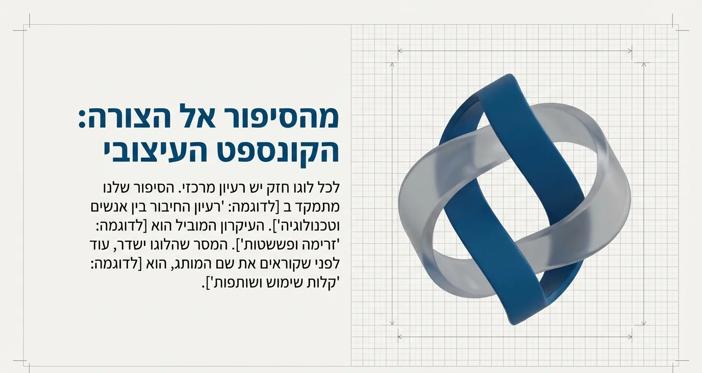
הפתרון: החשיפה
ואז, ורק אז: הלוגו. לבד, גדול, על רקע שקט. בלי טקסט, בלי הסברים, בלי עוד שלושה דברים מסביב.
קודם בשחור־לבן: מוכיחים שהצורה עובדת גם בלי צבע.ואז בצבע. בלי להסביר, בלי למהר. שנייה של שקט.רק עכשיו מילה אחת: זה הפתרון. ואז מקשיבים ללקוח.
מאחורי כל החלטה עומדת משמעות
מיד אחרי החשיפה, מפרקים את הלוגו להחלטות. כל החלטה מקבלת משפט אחד:
הצורה
הקווים המעוגלים משדרים נגישות ואנושיות, בעוד המבנה היציב משקף אמינות טכנולוגית.
הצבעוניות
הכחול הכהה מייצר תחושת ביטחון ומקצועיות, והאפור השקוף מוסיף טאץ’ מודרני ועומק.
הטיפוגרפיה
הפונט הנקי והגיאומטרי מבטיח קריאות, ורסטיליות ומראה מודרני.

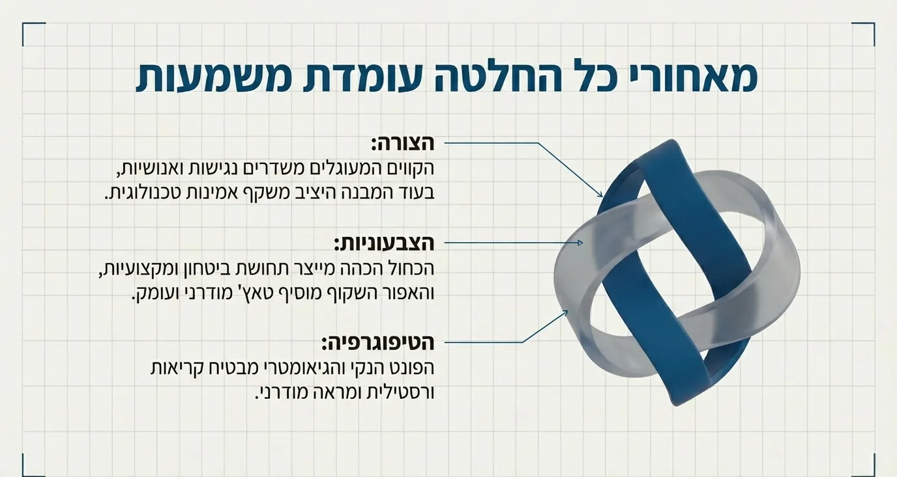
שימו לב שכל נימוק מחזיר לאסטרטגיה: „נגישות”, „אמינות”, „ביטחון” הן בדיוק המילים מהערכים ומעמוד ה„אנחנו כן”. ככה „אני לא אוהב כחול” הופך לשיחה על ביטחון ומקצועיות, ולא על טעם.
הוכחת ורסטיליות: הלוגו עובד בכל מצב
לוגו חזק חייב להיות גמיש. הראו איך הוא שומר על הזהות שלו בכל קנה מידה ובכל פורמט: אופקי, סמל זעיר, על רקע בהיר, על רקע כהה, על הצבע של המותג, עם מסגרות המרווח המגן, בגרסה שחורה, וסמל בלבד.

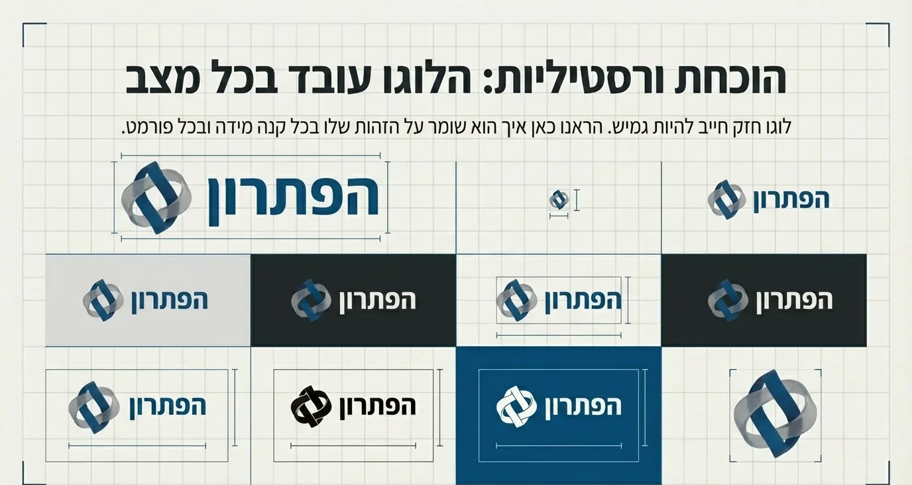
איך בונים את המערכת הזו מלכתחילה, ומה הן כל הגרסאות: מערכת הלוגו
יותר מלוגו: מערכת זהות שלמה
לוגו לבד זה לא מותג. בנינו מערכת חוקים עקבית שמבטיחה שהמותג ידבר בקול אחד בכל מקום: פלטת צבעים, טיפוגרפיה, אלמנטים גרפיים, גריד ומבנה.
#222222#004E89#E0E0E0
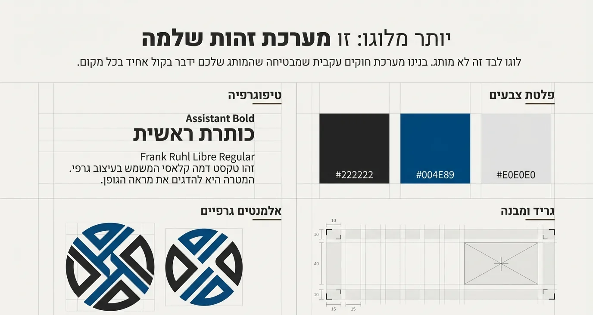
זה בעצם תקציר של ספר המותג. מה נכנס לספר המלא: ספר מותג
איך המותג חי בעולם
בעולם הדיגיטלי
המערכת העיצובית מותאמת למסכים, עם דגש על קריאות, נגישות ואימפקט: פרופיל אינסטגרם, אתר, מסך פתיחה של אפליקציה, מסך טעינה ו־GIF מונפש קצר. אם רלוונטי, מציגים גם דוגמאות של תנועה עדינה.

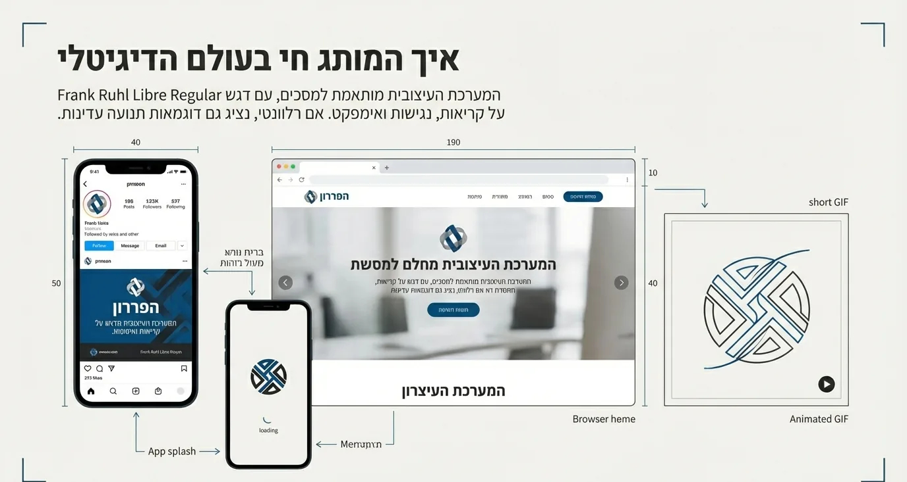
כל המידות לרשתות ולבאנרים תנועה, אבל לא ליד טקסט
בעולם הפיזי
הזהות הוויזואלית עובדת לא רק על מסך, אלא גם במרחב הפיזי, על חומרים שונים ובקני מידה משתנים: שלט קיר בקבלה, תיק בד, כרטיס ביקור.

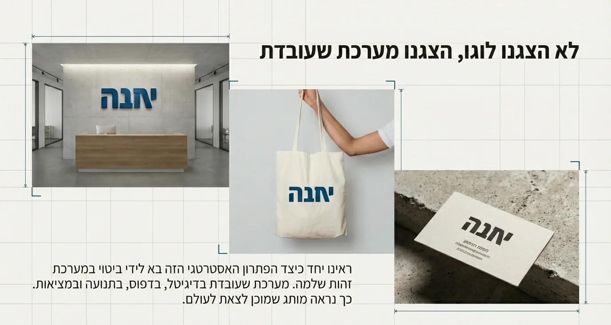
לא הצגנו לוגו, הצגנו מערכת שעובדת
השקף שסוגר את המצגת: ראינו יחד איך הפתרון האסטרטגי בא לידי ביטוי במערכת זהות שלמה. מערכת שעובדת בדיגיטל, בדפוס, בתנועה ובמציאות. ככה נראה מותג שמוכן לצאת לעולם.
עיקרון הזהב שלכם
אל תציגו אופציות.
הציגו פתרון.
אל תבקשו טעם.
הסבירו החלטה.
מצגת טובה לא מוכרת לוגו.
היא מוכרת ביטחון.
וכשהלקוח בכל זאת אומר „לא אוהב”
- שאלו למה, ותקשיבו עד הסוף. „לא אוהב” הוא כמעט תמיד סימפטום, לא אבחנה.
- חזרו לאסטרטגיה: „סיכמנו שאנחנו מאופקים ונגישים. האם זה עדיין נכון?” אם כן, השיחה חוזרת למה שמתאים, לא למה שיפה.
- הפרידו בין טעם להתאמה: אפשר לשנות גוון, אפשר לחדד צורה. לא מרכיבים לוגו מחלקים של כיוונים אחרים.
- אם ההערה נכונה, תודו בזה ותחזרו עם פתרון מתוקן. ביטחון זה לא להתבצר, זה לדעת למה.